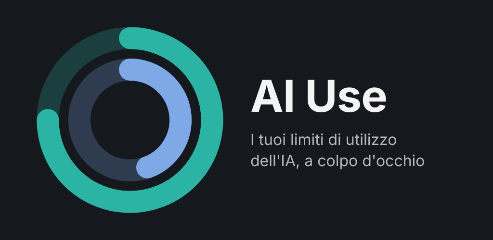
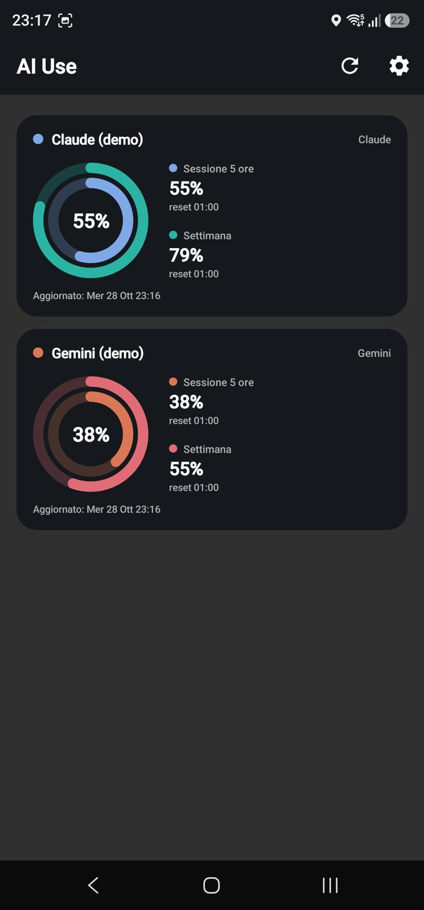
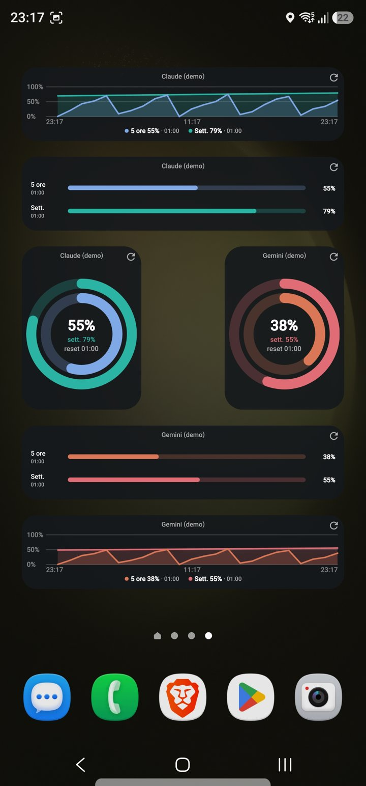

AI Use
Tieni d'occhio i limiti dei tuoi assistenti AI direttamente dalla schermata home e dall'orologio.
- Widget ad anelli, a barre e grafico delle ultime 24 ore.
- Claude, Gemini, ChatGPT e Cursor, fino a quattro account per servizio.
- Tile e complication per Wear OS.
- Colori personalizzabili per riconoscere ogni account al volo.
- Nessuna pubblicità, nessun tracciamento: i dati restano sul telefono.


Presto su Google Play.
AI Use è un'app indipendente, non affiliata ad Anthropic, Google, OpenAI o Anysphere.